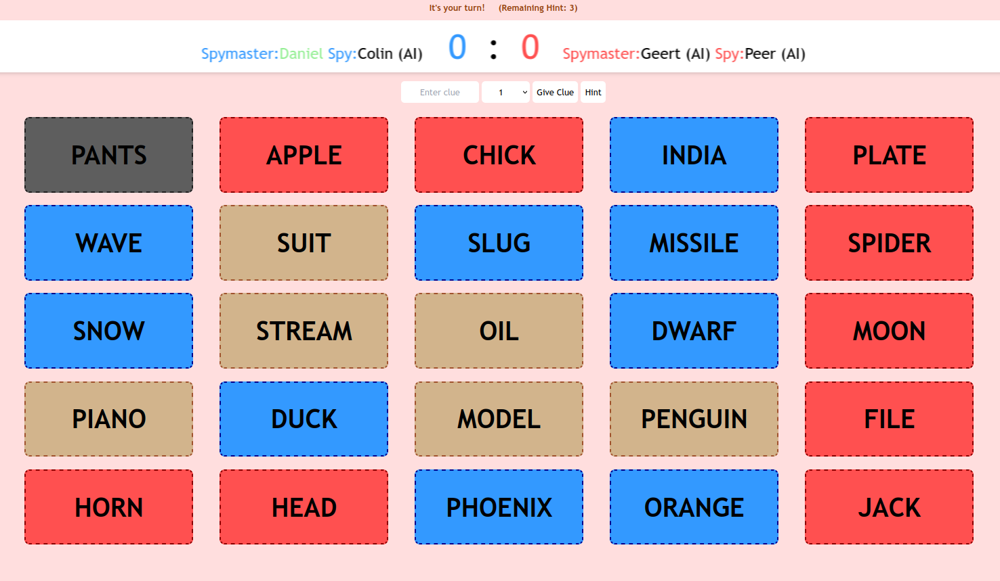
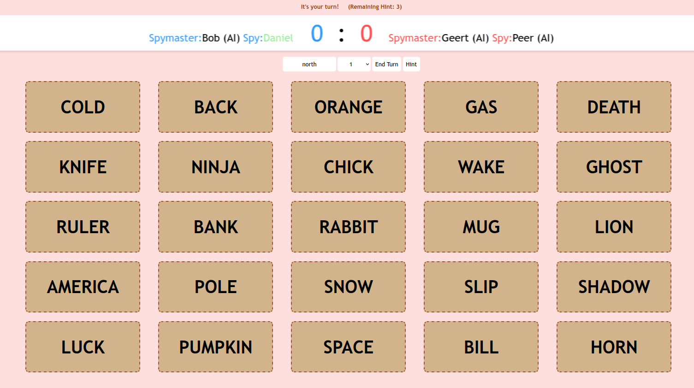

How to play
The game is split between two teams, red and blue, over a 5x5 board of word cards and the objective is to be the first to get to 9 points. Each team has a spy and a spymaster.
Spymaster
- You will see the team-colour of every card on the board.
- Enter a clue word that relates to a number of cards on the board.
- The clue cannot be the same as a word on the board.
- Enter the number of related cards and now it becomes your spy's turn.
The spymaster's board looks like this:

Spy
- You will the board without team-colours. You will get the spymaster's word clue and number of related cards.
- Pick the right cards relating to the word clue.
- e.g. If you get the clue "ocean-2" then the 2 cards "surf" and "water" might be correct.
- Your turn ends and the other team's turn begins when you either find all the correct cards or when you first pick a wrong card.
The spy's board looks like this:
